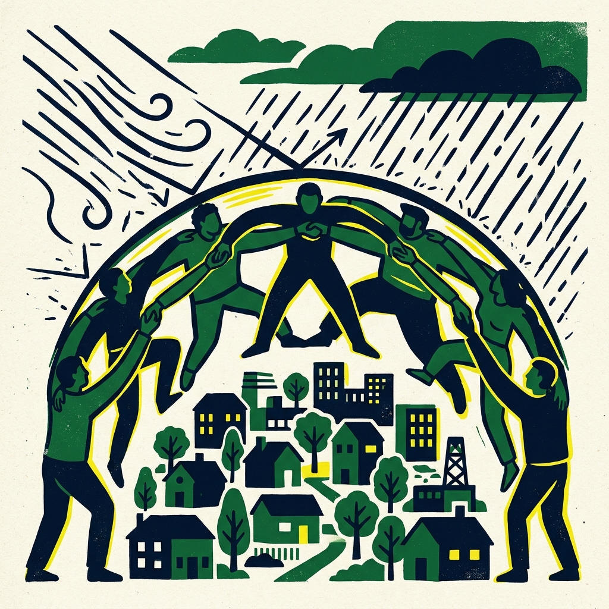

영유아 동반 가족
앱과 지도에서 대피소를 찾는 과정이 복잡했고, 아이를 돌보는 행동이 이동 속도와 판단에 계속 영향을 줬습니다.
- 행동
- 아이를 안고 앱을 확인함
- 침수 구간에서는 안고, 나머지 구간에서는 손을 잡고 이동함
- 아이를 안심시키고 보폭을 맞춰 걸음
- 필요한 정보
- 유모차 이동 가능 경로
- 화장실과 대기 공간
- 야간 운영 여부와 중간 생활 거점
스마트폰 지도간식장난감아이 짐 가방
2026 당신 옆의 공익활동 · Fieldwork + Data Proposal
안심이는 재난 대비를 특별한 상황을 위한 준비가 아니라 일상 속에서 이해하고 실천할 수 있는 문제로 전환하는 프로젝트입니다. 지도 속 정보로만 존재하는 대피소를 실제로 찾아가 보고, 시민의 시선에서 접근성과 이용 가능성을 확인하며, 그 경험을 함께 기록하고 공유합니다.

Community
안심이는 기존 재난 정보가 사건 중심으로 제공되는 한계를 넘어, 시민의 생활 맥락에서 재난 대비를 다시 바라보고자 시작되었습니다. ‘당신 옆의 공익활동’은 시민이 직접 참여하여 경험을 만들고 공유하는 커뮤니티 기반 활동이라는 점에서 안심이가 지향하는 방향과 맞닿아 있었습니다.
안심이는 “우리 동네 대피소 탐방대” 활동을 중심으로 커뮤니티를 운영합니다. 탐방대원들은 우리 동네 대피소를 직접 찾아가 접근성, 이용 가능성, 주변 환경을 시민의 시선에서 확인하고, 필요 시 대피소 관리자 인터뷰를 통해 실제 운영 방식과 숨겨진 정보를 확인합니다.
이 과정을 통해 수집된 경험을 바탕으로 우리 동네 대피소 지도, 시민 관점의 이용 가이드, 재난 대비 체크리스트 같은 콘텐츠를 제작하여 재난 대비를 보다 실천 가능한 형태로 확산시키고자 합니다.
Problem
현장에서 확인한 문제는 단순히 “대피소가 어디인가”가 아니었습니다. 시민에게 필요한 것은 실제 대피층, 이동 경로, 담당 연락처, 접근성, 동반 조건처럼 도착 전후의 판단을 가능하게 하는 정보였습니다. 가까운 대피소가 곧 갈 수 있는 대피소는 아니며, 갈 수 있는 대피소가 곧 머물 수 있는 대피소도 아닙니다.
Process
통합대피소, 민방공대피소, 지진옥외대피장소 등 기존 데이터가 시민의 판단에 어떤 정보를 주고 무엇을 빠뜨리는지 비교했습니다.
영유아 동반 가족, 휠체어 이용자, 반려동물 보호자, 지하주차장형 대피소 이용자를 중심으로 탐방 시나리오를 구성했습니다.
사당·남사초 일대에서 표지판, 출입구, 보행 경로, 내부 안내, 실제 도착 경험을 확인하며 데이터에 없는 공백을 기록했습니다.
재난구호 현장 경험을 바탕으로 담당주체, 결손정보, 취약계층 접근성, 대피소의 커뮤니티 기능을 데이터 항목으로 번역했습니다.
접근성, 생활조건, 경로 안내, 운영 주체, 결손정보를 포함하는 공개용 스키마 초안을 만들었습니다.
Field Scenes
앱과 지도에서 대피소를 찾는 과정이 복잡했고, 아이를 돌보는 행동이 이동 속도와 판단에 계속 영향을 줬습니다.
가까운 대피소가 실제로 접근 가능한지는 별도 문제였습니다. 목적지가 바뀌면 경로 판단과 물리적 위험이 함께 커졌습니다.
반려동물 동반 가능 여부만이 아니라 이동 중 배변, 다른 동물과의 거리, 도착 후 머물 공간이 함께 문제가 됐습니다.
대피소에 도착해도 어디로 들어가고, 어느 층까지 내려가며, 어디에 머물러야 하는지 판단하기 어려웠습니다.
Findings
이동 조건, 침수 가능성, 우회 여부, 동반 가족의 상황에 따라 실제 선택지는 달라집니다.
실제 대피층, 출입구, 표식, 엘리베이터 운행 범위가 함께 제공되어야 합니다.
담당 부서와 대표 연락처는 대피소 정보의 보조 항목이 아니라 기본 항목에 가깝습니다.
휠체어, 영유아, 고령자, 반려동물 동반 상황에서는 “갈 수 있음”과 “머물 수 있음”을 구분해야 합니다.
Data Proposal
재난 상황에서 실제 보행 경로와 머무는 공간으로서 대피소를 이용하기 위해 필요한 데이터 항목 구조입니다. 지자체 및 정부 안전디딤돌의 개선 제안을 위한 초안입니다.
| No | 중요도 | 대분류 | 항목 후보명 | 수집 타당성 및 설명 | 행정공개상태 |
|---|
안심이 팀 · 2026 당신 옆의 공익활동 · 2026-07-03
*검토용 초안 — 서울연구원 및 당옆공 행사 제출 최종 정리판*
현행 대피소 공공데이터는 위치·수용인원 등 시설 지정 정보에 머물러 있어, 시민이 "내 상황에서 이 대피소를 이용할 수 있는가"를 판단할 수 없습니다. 안심이 팀은 시민 현장 탐방(페르소나 프로브 2회)과 재난구호 전문가 심층인터뷰(108분, 주제별 코딩)를 교차 검증하여 47개 데이터 항목 후보를 도출했습니다. 이 중 신규 제안은 43개이며, 최우선(P1) 항목은 13개입니다. 핵심 제안은 세 가지입니다.
행정안전부 안전디딤돌 앱과 공공데이터포털은 대피소의 위치·명칭·수용인원을 제공합니다. 그러나 재난구호 전문가는 이를 한 문장으로 진단했습니다: "대피소는 지금 주소밖에 없다". 대피소는 기능이 준비된 시설이 아니라 그저 배정된 공간이며, "실제 가 보면 아무것도 없다"는 것입니다.
시민 탐방에서도 동일한 문제가 확인되었습니다. 탐방대원이 방문한 민방위 대피소(지하주차장)에서는 대피소 표지판이 보이지 않았고, 관리자·식수·화장실 위치를 도무지 알 수 없었으며, 도달해도 개방 여부를 확인할 수 없었습니다. 휠체어 페르소나는 인도 없는 차도와 연석 턱 때문에 대피소로 향하는 경로 자체가 원천적으로 가로막혔습니다.
이 간극의 구조적 원인은 두 가지입니다. 첫째, 현행 데이터는 공급자(행정) 관점의 시설 지정 정보로, 이용자의 생활·접근 맥락을 전혀 담지 않습니다. 둘째, 재난약자(고령·장애·영유아 동반·반려동물 동반)에게 정보 결손의 비용이 가장 크게 전가됩니다. 같은 대피소가 누군가에게는 안전한 공간이지만 다른 누군가에게는 도달조차 불가능한 차별의 공간이 됩니다.
대피소 관리가 지자체 내에서도 사회복지과·주민복지과·시설물관리과 등으로 제각각이라 긴급 구호 시 큰 보틀넥이 발생합니다. 전문가는 "행정센터 전화번호·대표부서만 한 곳에 정리해도 굉장히 큰 정보"라고 강조했습니다. 보직이 바뀌어도 주민센터 유선번호는 유지되므로 데이터 지속성 측면에서도 유용합니다.
"내가 실제로 입소할 수 있는 시설인가"를 결정하는 기본 수용 조건 정보입니다. 현장 탐방에서 엘리베이터가 지하 1층까지만 운행하는데 대피 공간은 지하 3~5층에 위치한 사례 등이 발견되어, 단순 엘리베이터 유무가 아닌 실제 휠체어 운행 가능 층 범위 정보가 필수적으로 매칭되어야 합니다.
대피소가 단순 '잠깐 피하는 곳'이 아니라 며칠~몇 주 생활하는 최소한의 생활 공간이라는 대피 현실을 데이터에 반영합니다. 식수 위치, 온열/난방 여부, 수면 조명 제어 가능 여부, 전기 콘센트 위치 등이 해당됩니다.
인터뷰가 아닌 현장 탐방을 통해 신규 발굴된 축으로, 대피소 건물 안으로 들어오기 전까지의 보행 인도 조건, 침수 위험 구간 우회로, 야간 외부 조명 표지판 상태, 그리고 정문이 아닌 실제 휠체어 진입 가능한 입구 좌표를 제공해야 합니다.
현장 구호 전문가들의 공통된 강력 권고는 "없으면 없다고 솔직하게 적어 달라"는 점이었습니다. '장애인 대피 불가', '샤워실 없음' 같은 정보의 기록은 행정 데이터에서 감추고 싶어 하지만, 시민 관점에서는 헛걸음을 줄이기 위한 가장 중요한 정보값입니다.
Outputs
시민 상황별로 대피소 접근과 이용 가능성을 확인하는 탐방 관점을 정리했습니다.
담당주체, 접근성, 경로 안내, 생활조건, 결손정보를 포함하는 항목군을 제안했습니다.
웹에서 바로 확인할 수 있는 JSON 형태의 공개 자산을 만들었습니다.
시민용 탐방 체크리스트와 지자체 제안서, 데이터 설명서로 확장할 수 있습니다.
Simulation
Recommendations